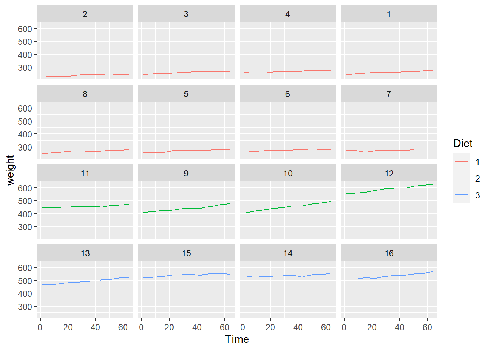
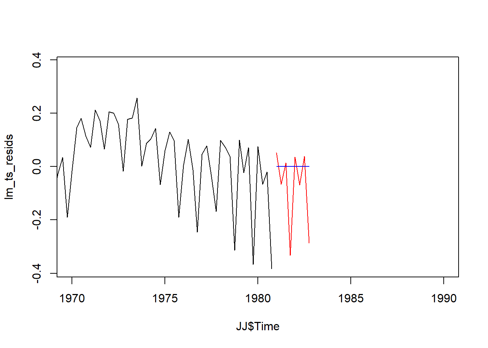
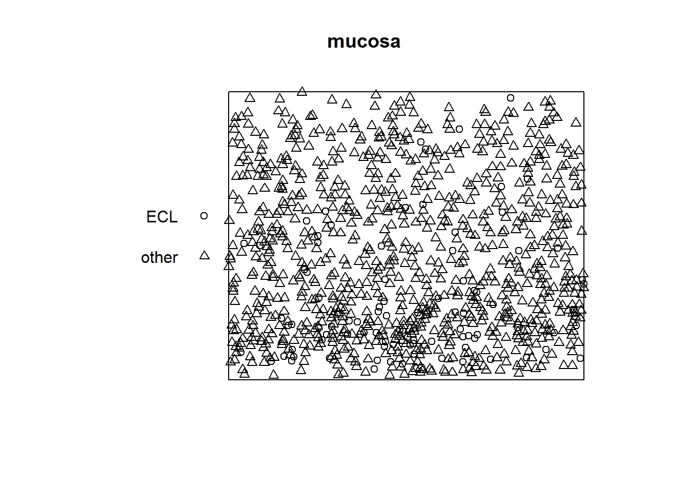
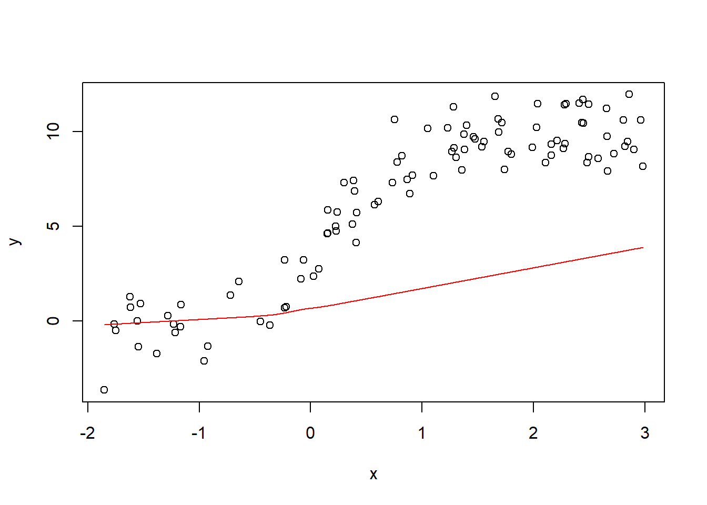

Chapter 10 STAT 4520/7520 - Homework 4 Spring 2022 Due: April 25, 2022
10.1 1)
The BodyWeight dataset in the nlme package contains data on the body weights of rats measured over 64 days. The body weights of the rats (in grams) are measured on day 1 and every seven days thereafter until day 64, with an extra measurement on day 44. The experiment started several weeks before “day 1.” There are three groups of rats, each on a different diet. It contains the variables: • weight: The body weight of the rat in grams. • Time: The time at which the measurement is made in number of days. • Rat: The rat whose weight is measured. • Diet: A factor with levels 1 to 3 indicating the diet that the rat receives. The data can be loaded with the following command.
data(BodyWeight,package = "nlme")10.1.1 a. Make a plot of weight vs Time for the data with rat specific lines to show the subject specific trajectory. Describe your findings. (7510 only) Further, color the lines differently for the different diets. Do you notice anything further?
#S7
library(dplyr)##
## Attaching package: 'dplyr'## The following objects are masked from 'package:stats':
##
## filter, lag## The following objects are masked from 'package:base':
##
## intersect, setdiff, setequal, unionlibrary(ggplot2)
ggplot(BodyWeight, aes(x=Time,y=weight))+
geom_line()+ facet_wrap(~Rat) # color the lines differently for different diet.
library(dplyr)
library(ggplot2)
ggplot(BodyWeight, aes(x=Time,y=weight, color = Diet))+
geom_line()+ facet_wrap(~Rat) 
10.1.2 b. Use lm() to regress the weight onto the Time. What is the slope and intercept of this model? Is the slope significant?
lm_model <- lm(weight ~ Time, BodyWeight)
summary(lm_model)##
## Call:
## lm(formula = weight ~ Time, data = BodyWeight)
##
## Residuals:
## Min 1Q Median 3Q Max
## -157.32 -119.54 -25.42 125.75 225.68
##
## Coefficients:
## Estimate Std. Error t value Pr(>|t|)
## (Intercept) 364.8359 19.0841 19.12 <2e-16 ***
## Time 0.5857 0.4921 1.19 0.236
## ---
## Signif. codes: 0 '***' 0.001 '**' 0.01 '*' 0.05 '.' 0.1 ' ' 1
##
## Residual standard error: 127 on 174 degrees of freedom
## Multiple R-squared: 0.008074, Adjusted R-squared: 0.002373
## F-statistic: 1.416 on 1 and 174 DF, p-value: 0.2356The slope is 0.59, the intercept is 365. It means the average weight at the begining is 365.Every unit of increase in time increases the weight by 0.59. However, the slope is not significant.
10.1.3 c. Use the lmList function to fit a linear regression model that describes how weight varies with days for each individual rat. How do the slopes and intercepts vary? Do you notice any patterns with respect to diets?
#how is c diff from d??? random intercept model vs. fixed effect here?
# how is lmList (fit a series simple regression within the group) vs. lmer diff
library(lme4)## Loading required package: Matrixml <- lmList(weight ~ I(Time-1) | Rat, BodyWeight)
sapply(ml,coef)[,1:16] |> as.matrix()## 2 3 4 1 8
## (Intercept) 226.884778 247.2276043 255.8208779 245.3256606 252.1534833
## I(Time - 1) 0.330356 0.3980345 0.3295261 0.4844071 0.4086919
## 5 6 7 11 9
## (Intercept) 256.2473029 264.3630487 268.0675693 443.0196549 407.925879
## I(Time - 1) 0.4058091 0.3184538 0.2018345 0.3625246 1.010657
## 10 12 13 15 14
## (Intercept) 409.080542 553.10439 463.0154619 524.1315571 526.0279100
## I(Time - 1) 1.341101 1.14763 0.9185193 0.4931644 0.3147849
## 16
## (Intercept) 504.3502948
## I(Time - 1) 0.9054379The intercepts and slopes vary a lot across the rats. Only Diet 2 (Rat 9-12) seems to have a positive slope.
10.1.4 d. Fit a random intercept model to account for the different weights of each individual rat and continue to use Time as a fixed effect. Answer the following:
• What proportion of the variation is explained by Rat? • Interpret the fixed effect intercept and comment on it’s value in the context of the variance component for rat. • Test for significance of the Time effect. What do you find? Is the conclusion different from part b?
library(lmerTest)##
## Attaching package: 'lmerTest'## The following object is masked from 'package:lme4':
##
## lmer## The following object is masked from 'package:stats':
##
## stepBodyWeight$Time_s <- BodyWeight$Time-1
ml_intercept <- lmer(weight ~ Time_s + (1| Rat), data = BodyWeight)
summary(ml_intercept)## Linear mixed model fit by REML. t-tests use Satterthwaite's method [
## lmerModLmerTest]
## Formula: weight ~ Time_s + (1 | Rat)
## Data: BodyWeight
##
## REML criterion at convergence: 1360.3
##
## Scaled residuals:
## Min 1Q Median 3Q Max
## -3.5029 -0.5458 -0.0394 0.5608 3.1139
##
## Random effects:
## Groups Name Variance Std.Dev.
## Rat (Intercept) 16940.80 130.157
## Residual 66.85 8.176
## Number of obs: 176, groups: Rat, 16
##
## Fixed effects:
## Estimate Std. Error df t value Pr(>|t|)
## (Intercept) 365.42163 32.56138 15.03013 11.22 1.05e-08 ***
## Time_s 0.58568 0.03168 159.00000 18.49 < 2e-16 ***
## ---
## Signif. codes: 0 '***' 0.001 '**' 0.01 '*' 0.05 '.' 0.1 ' ' 1
##
## Correlation of Fixed Effects:
## (Intr)
## Time_s -0.032#??? why it says null for the Rat?19640/ (19640 + 66.85)## [1] 0.9966078sqrt(19640)## [1] 140.1428confint(ml_intercept, method="boot", oldNames = FALSE)## Computing bootstrap confidence intervals ...## 2.5 % 97.5 %
## sd_(Intercept)|Rat 79.6436591 178.6157691
## sigma 7.3076618 9.2588507
## (Intercept) 292.8748923 429.2448963
## Time_s 0.5197526 0.6519881The % of variance explained by the rats is 99% The fixed effect is 365 or the average weight of the rat is 365 in the sample. However, the random effect standard deviation is 140 or almost half of the body weight. The Time effect is significant at 99% confidence level. The boostrap tests show no 0 is contained in the interval.
10.1.5 e. Obtain the BLUPs for the rats and list who is the most heavy.
# Get the blup
predict(ml_intercept)## 1 2 3 4 5 6 7 8
## 242.0738 246.1736 250.2734 254.3732 258.4730 262.5727 266.6725 267.2582
## 9 10 11 12 13 14 15 16
## 270.7723 274.8721 278.9719 218.6277 222.7275 226.8273 230.9270 235.0268
## 17 18 19 20 21 22 23 24
## 239.1266 243.2264 243.8121 247.3262 251.4260 255.5257 241.1651 245.2649
## 25 26 27 28 29 30 31 32
## 249.3646 253.4644 257.5642 261.6640 265.7638 266.3494 269.8635 273.9633
## 33 34 35 36 37 38 39 40
## 278.0631 247.5264 251.6262 255.7260 259.8258 263.9256 268.0253 272.1251
## 41 42 43 44 45 46 47 48
## 272.7108 276.2249 280.3247 284.4245 250.4345 254.5343 258.6340 262.7338
## 49 50 51 52 53 54 55 56
## 266.8336 270.9334 275.0332 275.6189 279.1330 283.2327 287.3325 255.7053
## 57 58 59 60 61 62 63 64
## 259.8051 263.9049 268.0047 272.1044 276.2042 280.3040 280.8897 284.4038
## 65 66 67 68 69 70 71 72
## 288.5036 292.6034 255.6144 259.7142 263.8140 267.9138 272.0136 276.1133
## 73 74 75 76 77 78 79 80
## 280.2131 280.7988 284.3129 288.4127 292.5125 246.4359 250.5357 254.6355
## 81 82 83 84 85 86 87 88
## 258.7353 262.8350 266.9348 271.0346 271.6203 275.1344 279.2342 283.3340
## 89 90 91 92 93 94 95 96
## 421.7366 425.8364 429.9362 434.0360 438.1358 442.2356 446.3353 446.9210
## 97 98 99 100 101 102 103 104
## 450.4351 454.5349 458.6347 433.6415 437.7413 441.8410 445.9408 450.0406
## 105 106 107 108 109 110 111 112
## 454.1404 458.2402 458.8259 462.3400 466.4397 470.5395 435.7316 439.8314
## 113 114 115 116 117 118 119 120
## 443.9312 448.0310 452.1308 456.2305 460.3303 460.9160 464.4301 468.5299
## 121 122 123 124 125 126 127 128
## 472.6297 571.3193 575.4191 579.5189 583.6187 587.7185 591.8183 595.9180
## 129 130 131 132 133 134 135 136
## 596.5037 600.0178 604.1176 608.2174 473.8089 477.9087 482.0084 486.1082
## 137 138 139 140 141 142 143 144
## 490.2080 494.3078 498.4076 498.9933 502.5074 506.6071 510.7069 517.1570
## 145 146 147 148 149 150 151 152
## 521.2567 525.3565 529.4563 533.5561 537.6559 541.7557 542.3413 545.8554
## 153 154 155 156 157 158 159 160
## 549.9552 554.0550 521.0647 525.1644 529.2642 533.3640 537.4638 541.5636
## 161 162 163 164 165 166 167 168
## 545.6633 546.2490 549.7631 553.8629 557.9627 514.7033 518.8031 522.9029
## 169 170 171 172 173 174 175 176
## 527.0026 531.1024 535.2022 539.3020 539.8877 543.4018 547.5016 551.6013max(predict(ml_intercept))## [1] 608.2174The rat 132 is heavist with a weight of 608.
10.1.6 f. Fit a mixed effects model that describes how the weight varies linearly with time and allows for random variation in the intercepts and slopes of the rats. Then do the following:
Note: Convergence of this model may be an issue. You can use the argument control=lmerControl(optimizer=“Nelder_Mead”) in lmer() to use a different optimizer.
#??? why need a diff optimizer to converge? what's diff?
ml_mix <- lmer(weight ~ Time_s + (Time_s| Rat), data = BodyWeight, control=lmerControl(optimizer="Nelder_Mead"))
summary(ml_mix)## Linear mixed model fit by REML. t-tests use Satterthwaite's method [
## lmerModLmerTest]
## Formula: weight ~ Time_s + (Time_s | Rat)
## Data: BodyWeight
## Control: lmerControl(optimizer = "Nelder_Mead")
##
## REML criterion at convergence: 1208.4
##
## Scaled residuals:
## Min 1Q Median 3Q Max
## -3.2658 -0.4256 0.0711 0.5871 2.7485
##
## Random effects:
## Groups Name Variance Std.Dev. Corr
## Rat (Intercept) 15246.84 123.4781
## Time_s 0.12 0.3463 0.56
## Residual 19.75 4.4436
## Number of obs: 176, groups: Rat, 16
##
## Fixed effects:
## Estimate Std. Error df t value Pr(>|t|)
## (Intercept) 365.42163 30.87642 15.00001 11.835 5.22e-09 ***
## Time_s 0.58568 0.08828 15.00001 6.634 7.95e-06 ***
## ---
## Signif. codes: 0 '***' 0.001 '**' 0.01 '*' 0.05 '.' 0.1 ' ' 1
##
## Correlation of Fixed Effects:
## (Intr)
## Time_s 0.550confint(ml_mix, method="boot", oldNames = FALSE)## Computing bootstrap confidence intervals ...##
## 2 warning(s): Model failed to converge with max|grad| = 0.00376307 (tol = 0.002, component 1) (and others)## 2.5 % 97.5 %
## sd_(Intercept)|Rat 82.8559068 171.3197209
## cor_Time_s.(Intercept)|Rat 0.1279669 0.8435561
## sd_Time_s|Rat 0.2129623 0.4749755
## sigma 3.9224008 4.9165953
## (Intercept) 311.7805567 417.4600562
## Time_s 0.3832744 0.7455524• Compute confidence intervals for the random effects, do the slopes and intercepts seem to vary between subjects?
The slopes and intercepts are both significant at 95% confidence level. Thus they both vary between subjects.
• Interpret the standard deviation of the slope random effect in the context of the fixed effect slope estimate. Does it seem large or small?
0.3463 / 0.58568## [1] 0.5912785The random effect of the slope is about 60% of the fixed effect, thus it seems large.
• Test for significance of the Time fixed effect again, and compare the result to parts b and d.
The time fixed effect is significant with an estimate of 0.59 and the t value of 6.63.
In b is: the estimate is the same of 0.59 but it was not significant with the time value of 1.19.
In d is: the estimate is the same of 0.59 but it was more significant at the t value of 18.49
In summary, the (f) result fits the data better. In b without considering the rat’s random effect, it contains too much noise. In d, without the random slope, too much variations were attributed to the intercept.
10.1.7 g. Obtain the BLUPs for the model in part f. Which rat has the fastest rate of increase? The slowest?
Compute the values of their specific slopes using the fixed effect estimate for time and their BLUP value. Print out the data for these two rats and comment on their minimum and maximum weights over the course of the study.
#predict(ml_mix)
ranef(ml_mix) ## $Rat
## (Intercept) Time_s
## 2 -138.54609 -0.2545799
## 3 -118.14461 -0.1887413
## 4 -109.71085 -0.2524615
## 1 -119.87610 -0.1075102
## 8 -113.21541 -0.1782011
## 5 -109.14111 -0.1805082
## 6 -101.21900 -0.2620429
## 7 -97.74852 -0.3716064
## 11 76.90824 -0.2025888
## 9 43.16497 0.4048760
## 10 44.94282 0.7164946
## 12 188.10531 0.5485514
## 13 97.89066 0.3235416
## 15 157.98977 -0.0713060
## 14 159.54107 -0.2392710
## 16 139.05884 0.3153536
##
## with conditional variances for "Rat"summary(ml_mix) #need to combine with the gloabl slope of 0.58 to get the actual slope. ## Linear mixed model fit by REML. t-tests use Satterthwaite's method [
## lmerModLmerTest]
## Formula: weight ~ Time_s + (Time_s | Rat)
## Data: BodyWeight
## Control: lmerControl(optimizer = "Nelder_Mead")
##
## REML criterion at convergence: 1208.4
##
## Scaled residuals:
## Min 1Q Median 3Q Max
## -3.2658 -0.4256 0.0711 0.5871 2.7485
##
## Random effects:
## Groups Name Variance Std.Dev. Corr
## Rat (Intercept) 15246.84 123.4781
## Time_s 0.12 0.3463 0.56
## Residual 19.75 4.4436
## Number of obs: 176, groups: Rat, 16
##
## Fixed effects:
## Estimate Std. Error df t value Pr(>|t|)
## (Intercept) 365.42163 30.87642 15.00001 11.835 5.22e-09 ***
## Time_s 0.58568 0.08828 15.00001 6.634 7.95e-06 ***
## ---
## Signif. codes: 0 '***' 0.001 '**' 0.01 '*' 0.05 '.' 0.1 ' ' 1
##
## Correlation of Fixed Effects:
## (Intr)
## Time_s 0.550#!!! how to seperate the effects for time growth?10.1.8 h. Add the (fixed) diet variable to the model in the form of an interaction with time. Does the diet effect weight? Is this effect different at different times?
ml_mix_int <- lmer(weight ~ Time_s*Diet + (Time_s| Rat), data = BodyWeight, control=lmerControl(optimizer="Nelder_Mead"))
#allow rat specific slope to vary. if I combine with another, no need to do both. The question only asks for two fixed effect interaction.
#Time_s and Rat are interacted. depends on the rat. summary(ml_mix_int)## Linear mixed model fit by REML. t-tests use Satterthwaite's method [
## lmerModLmerTest]
## Formula: weight ~ Time_s * Diet + (Time_s | Rat)
## Data: BodyWeight
## Control: lmerControl(optimizer = "Nelder_Mead")
##
## REML criterion at convergence: 1151.7
##
## Scaled residuals:
## Min 1Q Median 3Q Max
## -3.2556 -0.4220 0.0823 0.5993 2.7899
##
## Random effects:
## Groups Name Variance Std.Dev. Corr
## Rat (Intercept) 1.362e+03 36.9028
## Time_s 6.171e-02 0.2484 -0.14
## Residual 1.975e+01 4.4436
## Number of obs: 176, groups: Rat, 16
##
## Fixed effects:
## Estimate Std. Error df t value Pr(>|t|)
## (Intercept) 252.01129 13.07975 13.00001 19.267 6.08e-11 ***
## Time_s 0.35964 0.09114 12.99997 3.946 0.00167 **
## Diet2 201.27133 22.65479 13.00001 8.884 6.97e-07 ***
## Diet3 252.37002 22.65479 13.00001 11.140 5.07e-08 ***
## Time_s:Diet2 0.60584 0.15786 12.99997 3.838 0.00205 **
## Time_s:Diet3 0.29834 0.15786 12.99997 1.890 0.08127 .
## ---
## Signif. codes: 0 '***' 0.001 '**' 0.01 '*' 0.05 '.' 0.1 ' ' 1
##
## Correlation of Fixed Effects:
## (Intr) Time_s Diet2 Diet3 Tm_:D2
## Time_s -0.153
## Diet2 -0.577 0.088
## Diet3 -0.577 0.088 0.333
## Time_s:Dit2 0.088 -0.577 -0.153 -0.051
## Time_s:Dit3 0.088 -0.577 -0.051 -0.153 0.333#!!!do I need to interact when the Rat is the predictors for random slopes?The diet affects the wieght. Both Diet2 and Diet3 have positive and significant fixed efect coefficients. Thus, they are more effective than Diet1 in gaining weight. The Diet2 interact with the Time. As the time increases, the Diet2 is more effective in gaining the weight.
10.2 2) Time Series
Recall the Johnson & Johnson data from course notes, which contains the quarterly earnings per Johnson & Johnson share from 1960 to 1980. We can read this in and convert it to a more familiar dataframe format with the following code.
#Why read as vector in the dataframe -> final step add the trend back. Make the format as.vector -> strip out the meta data.
data(JohnsonJohnson)
JJ <- data.frame(EPS= as.vector(JohnsonJohnson),
Time= as.vector(time(JohnsonJohnson))) #matrix of year and quarter if without the vector. 1960 will be q1 -> 1960.25 vs. four columns for differetn period of the year10.2.1 a. Create a variable containing the log (base 10) of the EPS, then use lm() to regress it onto Time. Store the residuals of this regression in another variable in JJ. Make a plot of the residuals vs Time and describe your findings.
JJ$EPS_lg = log(JJ$EPS)lm_model_ts <- lm(EPS_lg ~ Time, JJ)
summary(lm_model_ts)##
## Call:
## lm(formula = EPS_lg ~ Time, data = JJ)
##
## Residuals:
## Min 1Q Median 3Q Max
## -0.38309 -0.08569 0.00297 0.09984 0.38016
##
## Coefficients:
## Estimate Std. Error t value Pr(>|t|)
## (Intercept) -3.275e+02 5.623e+00 -58.25 <2e-16 ***
## Time 1.668e-01 2.854e-03 58.45 <2e-16 ***
## ---
## Signif. codes: 0 '***' 0.001 '**' 0.01 '*' 0.05 '.' 0.1 ' ' 1
##
## Residual standard error: 0.1585 on 82 degrees of freedom
## Multiple R-squared: 0.9766, Adjusted R-squared: 0.9763
## F-statistic: 3416 on 1 and 82 DF, p-value: < 2.2e-16lm_ts_resids <- resid(lm(EPS_lg ~ Time, JJ))acf(lm_ts_resids)#weakly dependent process: The correlation is with which period? why does it keep decreasing? since it is further away?There seems to be a seasonal cycle of every 4th periods.
10.2.2 b. Run the detrended values through auto.arima() to find a good ARMA model. Note that you may want to use the additional argument stepwise = FALSE to allow auto.arima() to conduct a full grid search. What model was found?
#arima(lm_ts_resids, order = c(1, 0, 1))
library(forecast)## Registered S3 method overwritten by 'quantmod':
## method from
## as.zoo.data.frame zooauto.arima(lm_ts_resids,stepwise = FALSE)## Series: lm_ts_resids
## ARIMA(4,0,0) with zero mean
##
## Coefficients:
## ar1 ar2 ar3 ar4
## 0.0454 0.0386 -0.0826 0.8525
## s.e. 0.0601 0.0555 0.0613 0.0582
##
## sigma^2 = 0.008767: log likelihood = 79.07
## AIC=-148.13 AICc=-147.36 BIC=-135.98The model is ARIMA(4,0,0)
10.2.3 c. Use the best model to forecast the detrended relationship 2 years (8 quarters) ahead. Make a plot of the result and comment on how reasonable your predictions look.
#??? why is the JJ not need time() function?
dt <- diff(JJ$Time)[1] # diff func gives the difference of adjacnet value. diff 1,2,3 -> 1,1. take the first element.
time_steps <- max(JJ$Time) + (1:8)*dt # Time points we will predict at
ARMA_p1q1 <- arima(lm_ts_resids, order = c(4,0,0)) #!!! need to be on the residual. NOT in the JJ.
ARMA_p1q1_pred <- predict( ARMA_p1q1, n.ahead=8 )$pred
plot(JJ$Time,lm_ts_resids,xlim = c(1970, 1990),type = 'l') #How to specify exactly how many periods here? the Time unit is off??? #no plot.ts stripe out the time function -> only if passing time-seris object. generic func may recognize it is time series.
lines(x = time_steps, y = ARMA_p1q1_pred, col="red")
ARMA_p1q1_pred## Time Series:
## Start = 85
## End = 92
## Frequency = 1
## [1] 0.05160930 -0.06661295 0.01437544 -0.33250908 0.03520765 -0.06894246
## [7] 0.03825592 -0.28704069#time_stepsThe prediction seems to reflect the seasonal fluctuation and a reasonable average, thus the prediction looks good.
10.2.4 d. Use the linear model from part a to predict the trend for the next 8 quarters, add the result to that of part c, transform back to the original scale, and plot the forecast along with the original data. Does the forecast seem reasonable?
dt <- diff(JJ$Time)[1] # differences between time points ??? What's the diff?
time_steps <- max(JJ$Time) + (1:8)*dt # Time points we will predict at
#plot.ts(JJ[,3],xlim = c(1970, 1990)) #How to specify exactly how many periods here? the Time unit is off???
#lines(x = time_steps, y = ARMA_lm_pred, col="red")lm_model_ts_resid <- lm(lm_ts_resids ~ Time, JJ)
ARMA_lm_pred <- predict(lm_model_ts_resid,n.ahead=8) #??? cannot predict the time series?
ARMA_lm_pred_df <- data.frame(ARMA_lm_pred)
ARMA_lm_pred_df[c(1:8),] #change it to the first 8 periods of prediction## [1] -2.416911e-17 -2.329483e-17 -2.242055e-17 -2.154627e-17 -2.067199e-17
## [6] -1.979771e-17 -1.892343e-17 -1.804915e-17plot(JJ$Time,lm_ts_resids,xlim = c(1970, 1990),type = 'l')
lines(x = time_steps, y = ARMA_p1q1_pred, col="red")
lines(x = time_steps, y = ARMA_lm_pred_df[c(1:8),], col="blue")
The forcast doesn’t seem reasonable from the linear model. it is essentially a flat line that doesn’t reflect the seasonality.
#S25 !!!
set.seed(1); n <- 2000; eps_t <- rnorm(n, sd = 2); par(mfrow=c(1,1))
AR <- MA <- ARMA <- double(n)
AR[1:2] <- MA[1:2] <- ARMA[1:2] <- 0
for(i in 3:n) AR[i] <- sum(c(.6, .2) * AR[(i-1):(i-2)]) + eps_t[i]
for(i in 3:n) MA[i] <- eps_t[i] + .8*eps_t[i-1]
for(i in 3:n) ARMA[i] <- sum(c(.6, .2) * AR[(i-1):(i-2)]) + eps_t[i] + .8*eps_t[i-1]
plot.ts(AR,ylim = c(-15,15)); lines(MA, col="red"); lines(ARMA, col="blue")
abline(h=0,lty=2)10.3 3) Spatial Point Process Analysis
The mucosa datset in spatstat.data gives the locations of the centers of two types of cells in a cross-section of the gastric mucosa of a rat. For the purpose of this analysis, we will ignore the type of cell and focus on the locations of the cells only. The data can be loaded with the following command:
library(spatstat)## Loading required package: spatstat.data## Loading required package: spatstat.geom## Registered S3 method overwritten by 'spatstat.geom':
## method from
## print.boxx cli## spatstat.geom 2.4-0## Loading required package: spatstat.random## spatstat.random 2.2-0## Loading required package: spatstat.core## Loading required package: nlme##
## Attaching package: 'nlme'## The following object is masked _by_ '.GlobalEnv':
##
## BodyWeight## The following object is masked from 'package:forecast':
##
## getResponse## The following object is masked from 'package:lme4':
##
## lmList## The following object is masked from 'package:dplyr':
##
## collapse## Loading required package: rpart## spatstat.core 2.4-2## Loading required package: spatstat.linnet## spatstat.linnet 2.3-2##
## spatstat 2.3-4 (nickname: 'Watch this space')
## For an introduction to spatstat, type 'beginner'data(mucosa, package = "spatstat.data")10.3.1 a. Make a plot of the point pattern. Does the distribution of the points in space appear to be homogeneous Poisson process?
#S43
plot(mucosa, main=('mucosa')) It doesn’t appear to be homogeneous poisson since the distribution is more dense in the bottom of the plot in comparison with the top.
10.3.2 b. Make plots of G(r) and F(r) and comment on what you observe.
GCSR <- envelope(mucosa, Gest, verbose=FALSE) #??? how to judge if poisson? or all count poisson? just not homo?
FCSR <- envelope(mucosa, Fest, verbose=FALSE)
plot(GCSR); plot(FCSR)According to the plot, it is not a homogeneous poisson process as the black line is outside the boundary
10.3.3 c. Fit a point process model with linear terms in both x and y. Are there any significant spatial relationships?
#S62 - what's the z, why is it a func of x and y??? what's the weight on the distance here?
#ppm function to look for gradience -> intensitivyt of point process. how many in diff grids. lower value of y has more.
dat <- data.frame(mucosa)
library(ggplot2)
qplot(x, y, data=dat) ppm(mucosa ~ x + y) #homogeneous poisson process , must have a point dataframe.note there is no DV. the first item is the dataset. not set as data = ## Nonstationary multitype Poisson process
##
## Possible marks: 'ECL' and 'other'
##
## Log intensity: ~x + y
##
## Fitted trend coefficients:
## (Intercept) x y
## 6.825371255 -0.007512035 -1.156055790
##
## Estimate S.E. CI95.lo CI95.hi Ztest Zval
## (Intercept) 6.825371255 0.08038734 6.6678150 6.9829275 *** 84.9060501
## x -0.007512035 0.11152004 -0.2260873 0.2110632 -0.0673604
## y -1.156055790 0.14068205 -1.4317875 -0.8803240 *** -8.2175075#??? why the y coefficient is negative. how to interpret?
#pp.dists <- cbind(dat$x, dat$y) |> dist() |> as.matrix()
#pp.dists[1:3,1:3] #what's the distance here1:3!!! first three elements.
#pp.dists.inv <- 1/pp.dists
#diag(pp.dists.inv) <- 0
#ape::Moran.I(dat$x, pp.dists.inv) #!!! what weight should be here? -> ONLY if there are three dimensions for moran.There is significant spatial relationship here. The y is significant. the lower the y the denser the units per grid.
10.4 4) Loading Keras
Below you will find a block of code that can be used to simulate some simple noisy nonlinear data, fit an ANN to that data, and plot the fit.
# Then, use the install_tensorflow() function to install TensorFlow. Note that on Windows you need a working installation of Anaconda.
# already install the anaconda version of tensorflow https://tensorflow.rstudio.com/installation/
#library(tensorflow)
#install_tensorflow()library(tensorflow)
library(keras)
N <- 100
x <- runif(N, -2, 3) # Build a Gompertz function with some noise
a <- 10 # ceiling parameter
b <- 0 # horizontal shift parameter
c <- 2 # growth rate parameter
y <- a*exp(-exp(b - c*x)) + rnorm(N, mean=0, sd= a/10)
plot(x,y) # format data in a way model.fit() would like it
x <- as.matrix(x)
y <- as.matrix(y) # sequence along x for later prediction
xnew <- as.matrix(seq(from=min(x), to=max(x), length.out=1000)) # Build and compile simple model
model <- keras_model_sequential() |>
layer_dense(units=32, activation="relu", input_shape=1) |>
layer_dense(units=16, activation = "relu") |>
layer_dense(units=1, activation="linear")## Loaded Tensorflow version 2.8.0model |> compile(
loss = "mse",
optimizer = "adam",
metrics = list("mean_absolute_error")
)
# Fit model, get predictions, and display result.
model |> summary()## Model: "sequential"
## ________________________________________________________________________________
## Layer (type) Output Shape Param #
## ================================================================================
## dense_2 (Dense) (None, 32) 64
##
## dense_1 (Dense) (None, 16) 528
##
## dense (Dense) (None, 1) 17
##
## ================================================================================
## Total params: 609
## Trainable params: 609
## Non-trainable params: 0
## ________________________________________________________________________________# Can change verbose > 0 to see plots and text output as model trains
model |> fit(x, y, epochs = 20, verbose = 0)
y_pred = model |> predict(xnew)
plot(x, y)
lines(xnew, y_pred, col="red")
Complete the following:
10.4.1 a. Mostly as an exercise to ensure you have Keras installed correctly, run the above code and comment onthe quality of the fit you observe. NOTE: I was unable to run the code within an RMarkdown cell, but this may be due to a system configuration issue.
The fit is not well. It fits the first part of linear relationship well but not the second part of non-linear relationship.
10.4.2 b. Modify the code in an attempt to improve the fit. Specifically, study the effects (as well as interactions) of:
• Modifying how much data (N) we have. • The complexity of the model. • For how many epochs the model is trained.
library(tensorflow)
library(keras)
N <- 10000
x <- runif(N, -2, 3) # Build a Gompertz function with some noise
a <- 10 # ceiling parameter
b <- 0 # horizontal shift parameter
c <- 2 # growth rate parameter
y <- a*exp(-exp(b - c*x)) + rnorm(N, mean=0, sd= a/10)
plot(x,y) # format data in a way model.fit() would like it
x <- as.matrix(x)
y <- as.matrix(y) # sequence along x for later prediction
xnew <- as.matrix(seq(from=min(x), to=max(x), length.out=1000)) # Build and compile simple model
model <- keras_model_sequential() |>
layer_dense(units=32, activation="relu", input_shape=1) |>
layer_dense(units=16, activation = "relu") |>
layer_dense(units=1, activation="linear")
model |> compile(
loss = "mse",
optimizer = "adam",
metrics = list("mean_absolute_error")
)
# Fit model, get predictions, and display result.
model |> summary()## Model: "sequential_1"
## ________________________________________________________________________________
## Layer (type) Output Shape Param #
## ================================================================================
## dense_5 (Dense) (None, 32) 64
##
## dense_4 (Dense) (None, 16) 528
##
## dense_3 (Dense) (None, 1) 17
##
## ================================================================================
## Total params: 609
## Trainable params: 609
## Non-trainable params: 0
## ________________________________________________________________________________# Can change verbose > 0 to see plots and text output as model trains
model |> fit(x, y, epochs = 100, verbose = 0)
y_pred = model |> predict(xnew)
plot(x, y)
lines(xnew, y_pred, col="red")
plot(x, y)
lines(xnew, y_pred, col="red")The model fits much better after I added more data for training and let it train for more iterations.